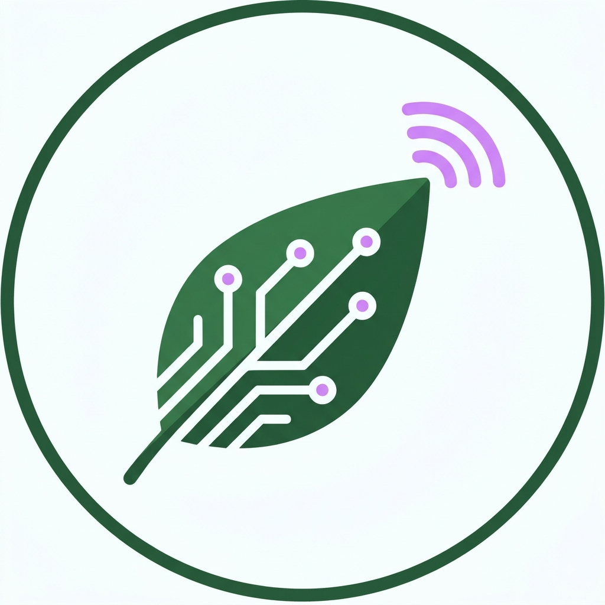
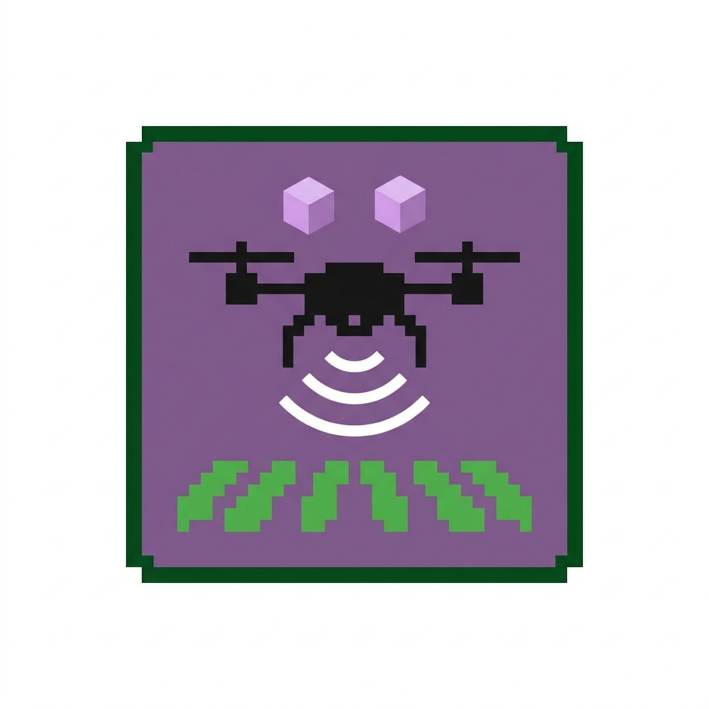
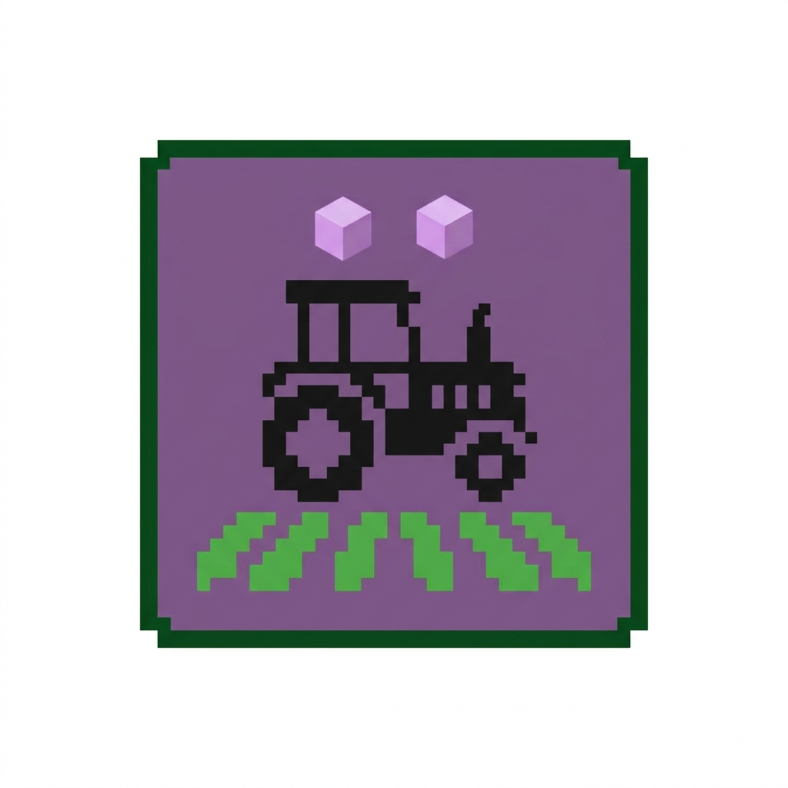
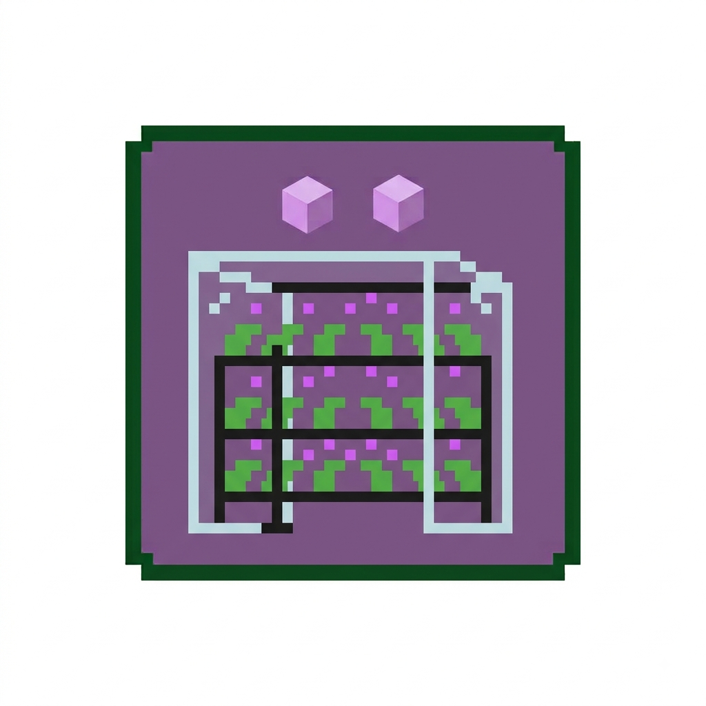
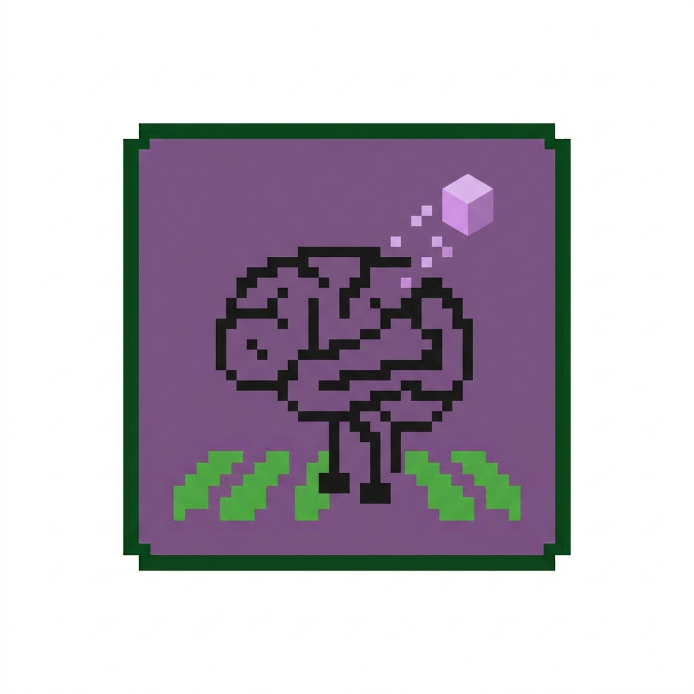

Boas-vindas ao Blog AgroTech!
Por: Luis Miguel Moreira Forghieri
Aqui você vai acompanhar como a tecnologia está transformando o setor agrícola, desde drones até inteligência artificial na lavoura.
Compartilhando conhecimentos sobre tecnologia, campo e sustentabilidade

Por: Luis Miguel Moreira Forghieri
Aqui você vai acompanhar como a tecnologia está transformando o setor agrícola, desde drones até inteligência artificial na lavoura.

Por: Luis Miguel Moreira Forghieri
O uso de drones na agricultura de precisão permite mapear pragas, verificar o estresse hídrico e pulverizar lavouras de forma eficiente.
Fonte: Embrapa

Por: Luis Miguel Moreira Forghieri
Tratores e colheitadeiras guiados por GPS e sensores realizam o plantio e a colheita com precisão milimétrica sem intervenção manual contínua.
Fonte: Canal Rural
Por: Luis Miguel Moreira Forghieri
Sensores instalados diretamente no solo medem a umidade e a temperatura em tempo real, acionando os pivôs de irrigação apenas quando necessário.
Fonte: AgTech Brasil

Por: Luis Miguel Moreira Forghieri
A agricultura em ambientes fechados usa hidroponia e iluminação LED personalizada para cultivar vegetais sem solo dentro das grandes cidades.
Fonte: Globo Rural

Por: Luis Miguel Moreira Forghieri
Algoritmos avançados analisam dados climáticos e histórico de cultivo para prever o momento exato da colheita e evitar perdas por clima adverso.
Fonte: TechAgro Insights